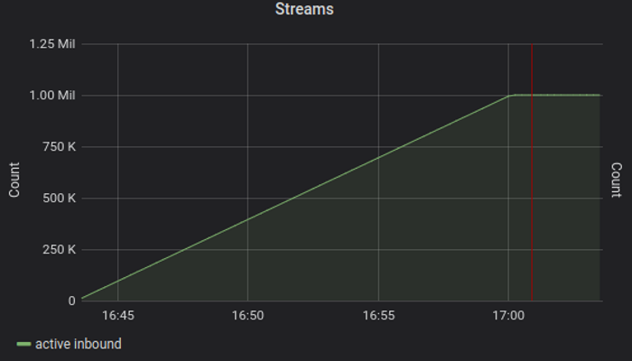
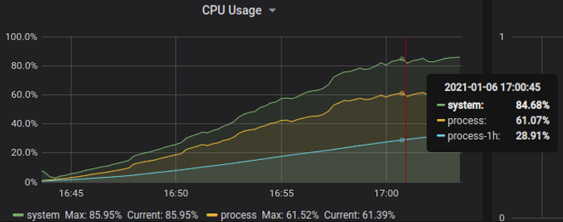
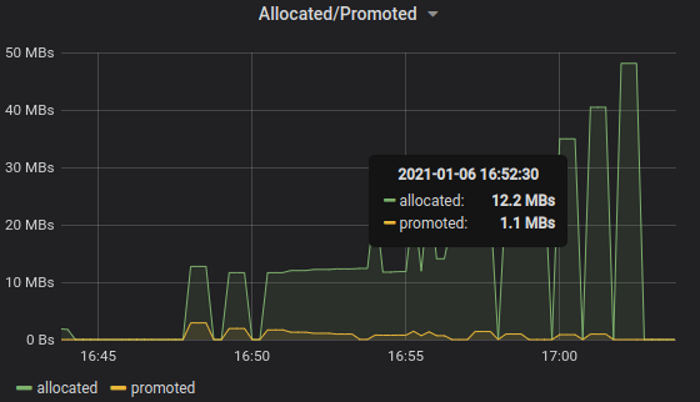

Message-Streams
🇺🇦 Maksym Ostroverkhov
jauntsdn.github.io / mostroverkhov@gmail / ostroverkhov@twitter / mostroverkhov@github
MESSAGE-STREAMS
⚡very fast GRPC-like services on JVM with rich streaming model over multiple network transports
Popular data format: Protocol Buffers.
Familiar workflow & tooling: GRPC.
Much faster, with several transports:
~ 🇬 Compatible, similar to & callable by GRPC, but:
+ Multiple transports.
+ Much better throughput/latency.
+ Lower garbage production.
+ Smaller wire size/binary footprint.
+ Built-in load estimation/balancing.
+ Resumable sessions.
+ Neutral.
TL;DR
- ⚡lean & very fast: millions messages/core, million of simultaneous streams on with commodity PC
- multiple APIs: ☕CompletableFutures & virt. threads; 🌊streaming with grpc-api, reactor, rxjava, mutiny
- pluggable networking: ⚡tcp, vm & unix sockets; 🌐grpc+web, websockets (http1+http2), http-json
- ☁️service APIs/codegen stubs [Message-Streams] are split from library runtime [RSocket-JVM]
- ☁️transparent origin [RPC] & proxy load estimation for cpu-efficient load balancers
- ☁️native image support with graalvm
Message-Streams: API
set of interactions with composable message streams
🌊flow control ⚠️error handling 🚫cancellation
- request-response 1:1
- request-stream 1:n
- request-channel n:n, n:1
- fire-and-forget 1:0 - latency is not important
Message-Streams: GRPC API
set of interactions with composable message streams
🌊flow control ⚠️error handling 🚫cancellation
Message-Streams: Reactive Streams API
set of interactions with composable message streams
🌊flow control ⚠️error handling 🚫cancellation
Message-Streams
Smallrye-mutiny from Quarkus / RedHat
Message-Streams
Project-reactor from SpringBoot / Vmware
Message-Streams
Rxjava3 from ReactiveX
Message-Streams: message
binary data with optional metadata
Message-Streams: FUTURES API
subset of non-streaming interactions
CompletableFuture from Jdk8 ☕
Message-Streams: VIRTUAL THREADS
subset of non-streaming interactions
much cheaper* blocking with Jdk21 ☕ virtual threads
Message-Streams: RPC
- 🇬 Protobuf/codegen RPC system on top of Message-Streams
- 🇬 GRPC compatibility
- 🇬 GRPC-like devexp: schema, compiler, client/server stubs
- 🔧request ranks, idempotent requests
- 🔧 non-opinionated instrumentation: prometheus, micrometer OOTB
- 🌊 virtual threads & completablefuture; GRPC-stubs; smallrye-mutiny, project-reactor, rxjava3
Message-Streams: RPC schema
Protobuf service 📄API definition
Message-Streams: RPC codegen stubs
RPC-compiler generated service 📄API
Message-Streams: RPC codegen stubs
Message metadata📄
List of ASCII key-values
Protocol Buffers on wire
Message-Streams: RPC codegen stubs
RPC-compiler generated client & server stubs
Message-Streams: RPC
Interop demo. Kitchen application services
https://github.com/jauntsdn/rsocket-jvm-interop-examples- 🌾Farmer: Mstreams-RPC-reactor / TCP
- 📄Recipes: Mstreams-RPC-futures / TCP
- 🧑🍳Roundsman: Mstreams-RPC-mutiny / ws-http2
- 👨🍳Chef: Mstreams-RPC-GRPC-stubs / unix sockets
- 🔪Kitchen: Mstreams-RPC-rxjava / GRPC
- 🍽️Gourmet: GRPC/grpc-java client
Message-Streams: runtime
extended alternative: JAUNTSDN / RSocket-JVM
Message-Streams: runtime
Jauntsdn / RSocket-JVM
⚡ alternative to RSocket/RSocket-java
of reactive.foundation [🪦 fall 2021]
MOTIVATIONS
RSocket / RSocket-java
Vulnerabilities
by reactive.foundation [🪦 fall 2021]
- ⛔ D-O-S: FD exhaustion, memory overflow [2]
- ⛔ 3 of 4 interactions: request-response, request-stream, request-channel
- ⛔ last release: early Jun 2021
🍃 team as main 📣, adopter & maintainer: 🙈🙉🙊
Message-Streams: runtime
RSocket protocol
- ⚡low latency/high throughput L5 protocol intended for high-performance services communication
- symmetric interactions, 2 peers may start requests
- 🌐 transport agnostic, runs on top of any reliable byte stream transport
- 🌊 superset of Message-Streams
Message-Streams: API, RPC
🌊flow control ⚠️error handling 🚫cancellation
RSocket-JVM: runtime
🏃 runtime: networking, transports - datacenter & internet
☁️ features: load estimation/circuit breaking, load balancing, real graceful close
Message-Streams: runtime
Jauntsdn / RSocket-JVM
- ⚡high perf, tiny garbage production, may serve 1 million streams with commodity PC
- 🌐 transports: TCP, unix sockets, websockets-over-http2, 🇬 GRPC compatibility
- ☁️ requests leasing: circuit breaking, adaptive latency-based load estimation for lightweight load balancing
- ☁️ request ranks: keep critical services under load, driven by responder with request leasing
- ☁️ scalable keep-alives, lightweight coarse scheduler for timeouts
- ☁️ graceful shutdown: client & server
- ☁️ non-opinionated metrics: prometheus, micrometer OOTB
- ☁️ symmetric interactions
Message-Streams: runtime
Jauntsdn / RSocket-JVM core
♻️ Protocol core is shared by vendor libs: mutiny, reactor etc
- ☮️♻️ components: framing, handshakes, keep-alives, requests leasing, graceful close, error handling etc
- ☮️ tiny & neutral: netty-buffer is only dependency
- ☮️♻️ modules: transports, load estimators, metrics
Message-Streams: runtime
Network transports
🌐 Internet transports (TLS) may share same port: websockets, websockets-http2, GRPC, http/json
Message-Streams: runtime
Network transports
☁️ JSON transcoding: selected services can be served as http/json
Control plane, health endpoint etc
Message-Streams: runtime
request leasing
⏳🎫Responder: time limited request credit: allow (duration, requests, rank)
- Circuit breaking: responder driven / requester aware
- Responder: request stats
- Credit = f(svc latency stats/ success rate + RTT)
- Duration (interval): cap requests rate
- Lease = credit + request rank: service brownout
- Requester: RSocket.availability(rank) [0 ; 1]
Message-Streams: runtime
leasing: stats
Message-Streams: runtime
leasing: load balancing
- 📖theory: min(set(RSocket.availability)) + conn RTT
- 🔨practice: more complex - still cpu-efficient
- LB + lease: CPU utilization + connection RTT
- LB + lease metadata: allowed fnf, indicative service latencies
- service latency: call hash + latency
Message-Streams: runtime
RPC origin lease: latency based load estimator
Message-Streams: runtime
RPC origin lease: latency based load estimator
- AIMD: additive inc⬆️ / multiplicative dec⬇️
- service ⬅️response latency
- 🔄RTT latency
- ⚠️error rate
- ♨️CPU / memory utilization
- ♨️leased capacity utilization
Message-Streams: RPC
Interop demo. Kitchen application services
https://github.com/jauntsdn/rsocket-jvm-interop-examples- 🌾Farmer: Mstreams-RPC-reactor / TCP
- 📄Recipes: Mstreams-RPC-futures / TCP
- 🧑🍳Roundsman: Mstreams-RPC-mutiny / ws-http2
- 👨🍳Chef: Mstreams-RPC-grpc-stubs / unix sockets
- 🔪Kitchen: Mstreams-RPC-rxjava / GRPC
- 🍽️Gourmet: GRPC/grpc-java client
Message-Streams: runtime
RPC througput test
⚡Single vCPU RYZEN™ 5 2600X, reactor, non-TLS, TCP EPOLL /w linux 5.4.0, jdk11
| msg size, bytes | 8 | 128 | 512 |
|---|---|---|---|
| request-response | 1.45mil | 1.0mil | 0.55mil |
| request-stream | 3.3mil | 2.4mil | 0.9mil |
| request-channel | 3.5mil | 2.4mil | 1.25mil |
Message-Streams: runtime
GRPC-RPC througput test
🦥GRPC-java client, MStreams RPC server. Single vCPU RYZEN™ 5 2600X, reactor, non-TLS, TCP EPOLL /w linux 5.4.0, jdk11
| msg size, bytes | 8 |
|---|---|
| request-response | 0.1mil |
| request-stream | 1.4mil |
| request-channel | 1.2mil |
Message-Streams: runtime
Load test
♨️♨️1 million streams, 10k conns, single host [3]
- Host: 16 vCPU / 32gb RAM, linux 5.4.0, jdk11
- Scheduler: Nomad/Consul
- 1 server: 8vCPU/16gb, 2 clients: 4vCPU/8gb each
- TCP non-TLS /w EPOLL IO
Server, simultaneous streams
♨️1 million streams over 10k connections, monotonically over ~16 mins
Host CPU usage
♨️server: 60% of host CPU, 85% overall used by load test
Server, memory alloc rate
❄️Peaks at only 50 Mb/sec => 50 bytes per inbound message
Message-Streams: RPC
Size & start time
☕CompletableFutures: 1st request time & binaries size
| app | TCP/-TLS | websocket-http2/+TLS |
|---|---|---|
| svc size | 2.9MB | 2.9MB |
| app size | 5.3MB | 7.7MB |
| 1st request ⏳ | 350 ms | 600 ms |
- svc: netty 0.9MB, protobuf 1.7MB - room for 🔧
Message-Streams: RPC
Distribution size
☕CompletableFutures: application image (/w JRE17) & alpine docker image size
| app | TCP | websocket-http2/TLS |
|---|---|---|
| App JRE image | 49.5MB | 51.9MB |
| App alpine 📦 | 57MB | 59.4MB |
Message-Streams: RPC
Native binary size
☕CompletableFutures: native executable /w Graalvm11, serial GC
- ⚡TCP native binary size: 20.5MB, startup: instant
Summary
- ⚡lean & very fast (millions messages/core) GRPC-like services on JVM with rich streaming model
- multiple APIs: ☕CompletableFuture; 🌊streaming with reactor, rxjava, mutiny, grpc-stubs
- pluggable networking: ⚡tcp, unix sockets; 🌐grpc, websockets-over-http2
- ☁️service APIs/codegen stubs [Message-Streams] are split from library runtime [RSocket-JVM]
- ☁️transparent origin [RPC] & proxy load estimation which enables cpu-efficient load balancers
- ☁️native image support with graalvm
Questions
jauntsdn.com / mostroverkhov@gmail / ostroverkhov@twitter / mostroverkhov@githubReferences
[1] https://jauntsdn.github.io/post/rsocket-million-streams-2/
[2] https://github.com/spring-projects/spring-framework/issues/27373
https://github.com/spring-projects/spring-framework/issues/27427
https://github.com/spring-projects/spring-framework/issues/27428
https://github.com/spring-projects/spring-framework/issues/27462
[3] https://jauntsdn.github.io/post/rsocket-million-streams-1/